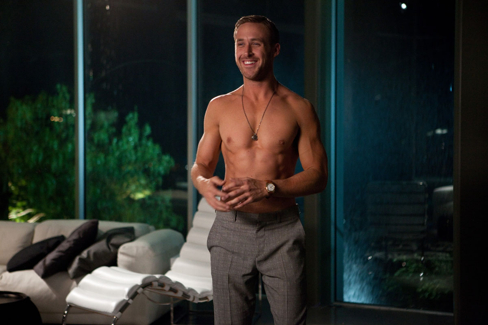

Cal Weaver (Steve Carell) tem quarenta e poucos anos e leva uma vida perfeita, com um bom emprego, filhos e um casamento com a namorada do colégio, Emily (Julianne Moore). Até que, ao descobrir que Emily o está traindo e quer o divórcio, sua vida desaba por completo. Forçado a voltar ao mundo dos solteiros, ele enfrenta as dificuldades habituais de quem não sabe mais como se portar para se aproximar de uma mulher. É quando entra em cena Jacob Palmer (Ryan Gosling), um amigo que passa a lhe dar algumas dicas.